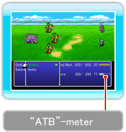
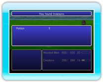

21 |
Het vechtsscherm / vechten |
 |
|

Als je in het spel een vijand tegenkomt (zowel op de “Field Map” als tijdens het verhaal), zal het spel overschakelen naar het vechtscherm. De tijd verstrijkt tijdens een gevecht in een constant tempo en als de maximale “ATB” (“Active Time Battle” - actieve gevechtstijd) wordt bereikt door een personage, is het zijn of haar beurt om te vechten. ● StrijdbesturingenGebruik tijdens het gevecht strijdbesturingen om je personages aanvallen te laten uitvoeren (-> pag. 22). Als de gevechtsmodus staat ingesteld op “Active” (actief), dan loopt de tijd gewoon door terwijl je bezig bent met het selecteren van strijdbesturingen. (-> P. 20).
● Volgorde van beurtenAls twee of meer personages een volle “ATB”-meter hebben, kun je door op ● GevechtsregelsJe wint een gevecht door alle vijanden te verslaan. Als de gehele groep buiten bewustzijn is of verlamd, is het spel voorbij. Over de “ATB”-meterDe “ATB”-meter geeft weer hoeveel tijd er moet zijn verstreken voordat bepaalde acties plaats kunnen vinden. Niet alleen zie je wanneer een personage een gevechtscommando kan kiezen, ook kun je zien hoeveel tijd er nog rest voordat een vaardigheid, “Band” of andere actie kan worden uitgevoerd.

● Met de staart tussen de benen...Houd

● Eind van het gevechtAls je een gevecht wint, verdien je “EXP” (ervaringspunten), “gil” en soms ook voorwerpen en andere schatten.
|

 |
 |
 |